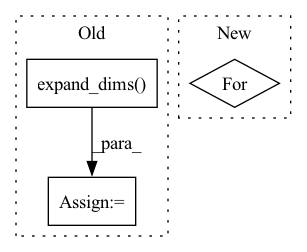

Pattern ID :40383
Before Change
sample_weight[len(X):] = 1.0*self.Cu/self.Cl
self.clf.fit(X, y)
unlabled_y = self.clf.predict(unlabled_X)
unlabled_y = np.expand_dims( unlabled_y, 1)
u_X_id = np.arange(len(unlabled_y))
_X = np.vstack([X, unlabled_X])
_y = np.vstack([y, unlabled_y])
while self.Cu < self.Cl:
self.clf.fit(_X, _y, sample_weight=sample_weight)
while True:
unlabled_y_d = self.clf.decision_function(unlabled_X) // linear: w^Tx + b
unlabled_y_= unlabled_y.reshape(-1)
epsilon = 1 - unlabled_y_ * unlabled_y_d // calculate function margin
positive_set, positive_id = epsilon[unlabled_y > 0], u_X_id[unlabled_y > 0]
negative_set, negative_id = epsilon[unlabled_y < 0], u_X_id[unlabled_y < 0]
positive_max_id = positive_id[np.argmax(positive_set)]
negative_max_id = negative_id[np.argmax(negative_set)]
a, b = epsilon[positive_max_id], epsilon[negative_max_id]
if a > 0 and b > 0 and a + b > 2.0:
unlabled_y[positive_max_id] = unlabled_y[positive_max_id] * -1
unlabled_y[negative_max_id] = unlabled_y[negative_max_id] * -1
unlabled_y = np.expand_dims(unlabled_y, 1)
_y = np.vstack([y, unlabled_y])
self.clf.fit(_X, _y, sample_weight=sample_weight)
else:After Change
self.class_dict={classes[0]:-1,classes[1]:1}
self.rev_class_dict = {-1:classes[0] , 1:classes[1]}
y=copy.copy(y)
for _ in range(L):
y[_]=self.class_dict[y[_]]
self.clf.fit(X, y)
In pattern: SUPERPATTERN
Frequency: 4
Non-data size: 3
Instances Fragment ID: 114558566
Project Name: ygzwqzd/lamda-ssl
Commit Name: 583dd75539ccb548ccfa1f9f19745f30ddb05288
Time: 2022-02-09
Author: 1129198222@qq.com
File Name: Semi_sklearn/Model/Classifier/TSVM.py
M Class Name: TSVM
N Class Name: TSVM
M Method Name: fit(4)
N Method Name: fit(4)
M Parent Class: ClassifierMixin,TransductiveEstimator
N Parent Class: ClassifierMixin,TransductiveEstimator
M File Name: Semi_sklearn/Model/Classifier/TSVM.py
N File Name: Semi_sklearn/Model/Classifier/TSVM.py
M Start Line: 65
M End Line: 92
N Start Line: 66
N End Line: 122
Before Change
item_ids = np.concatenate([np.expand_dims(item_ids, -1), neg_items], axis=1).reshape(-1)
n_candidates = len(item_ids) // len(user_ids)
user_ids = np.expand_dims(user_ids, 1).repeat(n_candidates, axis=1).reshape(-1)
times = np.expand_dims( times, 1) .repeat(n_candidates, axis=1).reshape(-1)
history_items = np.expand_dims(history_items, 1).repeat(n_candidates, axis=1).reshape(-1)
history_times = np.expand_dims(history_times, 1).repeat(n_candidates, axis=1).reshape(-1)
After Change
// - time intervals w.r.t. recent relational interactions (-1 if not existing)
category_ids = list()
relational_intervals = list()
for i, candidate_lst in enumerate(item_ids):
intervals_lst = list()
for r_idx in range(0, self.relation_num):
intervals = np.ones_like(candidate_lst) * -1.
for j, target_item in enumerate(candidate_lst): Fragment ID: 114558567
Project Name: thuwangcy/rechorus
Commit Name: 25fac75a3939959fb807d2413754135b9b650fec
Time: 2020-05-19
Author: wangcy18@mails.tsinghua.edu.cn
File Name: src/models/SLRC.py
M Class Name: SLRC
N Class Name: SLRC
M Method Name: get_feed_dict(6)
N Method Name: get_feed_dict(6)
M Parent Class: BaseModel
N Parent Class: BaseModel
M File Name: src/models/SLRC.py
N File Name: src/models/SLRC.py
M Start Line: 77
M End Line: 104
N Start Line: 77
N End Line: 112
Before Change
time = df.loc[:, "t"].iloc[n_lags-1:-n_forecasts].values
// time = pd.DataFrame(time)
time = np.expand_dims( time, axis=1)
// lags = pd.DataFrame(
// [df.loc[:, "y"].iloc[i: i + n_lags].values for i in range(n_samples)]
// )
// targets = pd.DataFrame(
// [df.loc[:, "y"].iloc[i + n_lags: i + n_lags + n_forecasts].values for i in range(n_samples)]
// )
series = df.loc[:, "y_scaled"].values
lags = np.array([series[i: i + n_lags] for i in range(n_samples)])
if n_forecasts > 0:
targets = [series[i + n_lags: i + n_lags + n_forecasts] for i in range(n_samples)]
else:
targets = [[None] * n_samples]
targets = np.array(targets)
// if verbose:
// print("time_idx.shape", time.shape)
// print("input.shape", lags.shape)
// print("target.shape", targets.shape)
// df = pd.concat([time, lags, targets], axis=1)
// df.columns = ["t"] + ["input_{}".format(num) for num in list(range(len(lags.columns)))] + \
// ["target_{}".format(num) for num in list(range(len(targets.columns)))]
// return df
inputs = [lags]
input_names = ["lags"]
if n_trend == 1:
inputs += [time]
input_names += ["trend"]
elif n_trend > 1:
raise NotImplementedErrorAfter Change
// targets = np.array(targets)
if verbose:
for key, value in inputs.items():
print(key, "shape: ", value.shape)
return inputs, targets
Fragment ID: 114558556
Project Name: ourownstory/neural_prophet
Commit Name: 384f1803a758d07de17db9631d9941c4d7a65de3
Time: 2020-05-19
Author: oskar.triebe@merantix.com
File Name: code/make_dataset.py
M Class Name: AnonimousClass
N Class Name: AnonimousClass
M Method Name: tabularize_univariate_datetime(4)
N Method Name: tabularize_univariate_datetime(5)
M Parent Class:
N Parent Class:
M File Name: code/make_dataset.py
N File Name: code/make_dataset.py
M Start Line: 125
M End Line: 176
N Start Line: 152
N End Line: 184
Before Change
data = pickle.load(f)
xs, us = data
us = np.expand_dims( us, axis=-1)
// import pandas as pd
After Change
us = np.reshape(us, (-1,11,3))
import matplotlib.pyplot as plt
for i in range(100):
plt.plot(xs[i,1:,0], xs[i,1:,1])
plt.show()
return xs, us Fragment ID: 114558553
Project Name: mit-acl/nn_robustness_analysis
Commit Name: 3f301ce67be70902840d23f40aecc98b346c412b
Time: 2021-02-16
Author: mfe@mit.edu
File Name: nn_closed_loop/nn_closed_loop/utils/nn.py
M Class Name: AnonimousClass
N Class Name: AnonimousClass
M Method Name: load_data(0)
N Method Name: load_data(0)
M Parent Class:
N Parent Class:
M File Name: nn_closed_loop/nn_closed_loop/utils/nn.py
N File Name: nn_closed_loop/nn_closed_loop/utils/nn.py
M Start Line: 48
M End Line: 52
N Start Line: 57
N End Line: 70